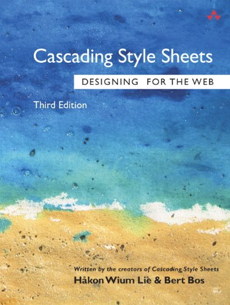
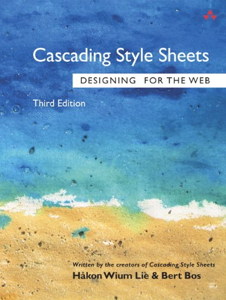

| Datos de publicaciones | Fecha de publicación | ISBN | Idioma | Autores |
|---|---|---|---|---|
| Cascading Style Sheets: Designing for the Web | 22 mayo 1997 | 978-0201419986 | Inglés | Bert Bos y Hakon Wium Lie |
| De Kloof Overbrugd? | 11 marzo 2011 | 978-9056296773 | Holandés | Bert Bos |
 "
"